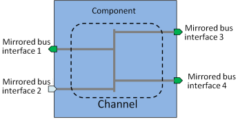

Channels editor provides a summary of the channels contained in the component. Channel is used within a bus component to describe which bus interfaces are connected via bus. This editor can be used to add, edit and remove channels.
The name and description columns contain the name and textual description of the channel.
Interface references contain the names of the mirrored bus interfaces that are grouped to a same channel.
Picture below illustrates the connections between mirrored bus interfaces.
